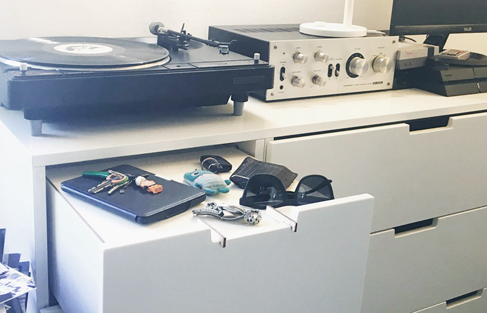

15+
anni tra sviluppo, project management, formazione e innovazione applicata.
Progetto e sviluppo applicazioni web, strumenti interattivi, micro-prodotti browser-based e sistemi sperimentali con una logica semplice: definire bene il problema, ridurre il rumore, consegnare qualcosa che possa essere usato davvero.
Il lavoro unisce delivery, scrittura tecnica, UX, prototipazione e cultura maker. Non una vetrina di tecnologie, ma soluzioni leggibili, mantenibili e adeguate al contesto: dal proof of concept alla release, passando per metodo, priorita e adozione.
anni tra sviluppo, project management, formazione e innovazione applicata.
software, PWA, interfacce browser-based e prototipi fisici connessi.
analisi, progettazione, sviluppo, validazione e passaggio operativo.
Supporto operativo per iniziative digitali che richiedono visione tecnica, prioritizzazione e capacita di trasformare un concept in un sistema usabile.
Impostazione di roadmap, sprint, requisiti, priorita e coordinamento tra stakeholder, sviluppo e rilascio.
Applicazioni web, strumenti interni, interfacce specialistiche e micro-prodotti digitali pensati per workflow reali.
PoC, installazioni, elettronica creativa, IoT e prototipazione rapida per testare velocemente comportamenti e scenari d'uso.
Didattica, workshop e facilitazione su coding, strumenti digitali, robotica e metodi di lavoro orientati alla pratica.
Una linea di lavoro costruita tra FabLab, elettronica, physical computing e produzione digitale. Qui l'obiettivo non e solo dimostrare che una tecnologia funziona, ma metterla in relazione con didattica, eventi, sperimentazione e prototipazione concreta.
Lavorare con oggetti e interfacce fisiche costringe a chiarire feedback, ergonomia, manutenzione e affidabilita. E una disciplina utile anche quando il risultato finale e solo software.

Robot educativo con sensori, display, buzzer, RGB e testa rotante. Un progetto aperto, didattico e programmabile.
Vai al sito
Social camera per eventi con scatto automatico e pubblicazione immediata, pensata per format live e attivazioni.
Vai al sito
Intervento di personalizzazione domestica progettato con strumenti di fabbricazione digitale e logica di prototipazione rapida.
Vai al sitoUna selezione di progetti che mette insieme logica applicativa, attenzione all'esperienza d'uso e sperimentazione rapida su web e dispositivi mobili.
Ricerca voli A/R con filtri su budget, durata e calendario per individuare combinazioni economiche in modo piu leggibile.
ApriForza 4 in versione browser con CPU, livelli di difficolta e ritmo di partita rapido su desktop e mobile.
ApriSequenze, modalita strict e interazione essenziale in una rilettura minimale di Simon progettata per il browser.
ApriGeneratore audio regolabile in tempo reale per concentrazione, ambientazione e piccoli test sonori senza installare nulla.
ApriLaboratori, aziende e realta con cui ho sviluppato consulenza, ricerca, prototipi, formazione e software applicato.
Lavorazioni CNC e prototipazione digitale.
fabersum.itRicerca elettroacustica, sperimentazione sonora e strumenti interattivi.
peal.spaceAssociazione e laboratorio di fabbricazione digitale, maker culture e progettazione aperta.
fablabtorino.orgSoftware, embedded systems e soluzioni IoT orientate alla produzione.
little-endian.itPer consulenze, collaborazione progettuale, sviluppo software, prototipazione o workshop, questi sono i riferimenti pubblici principali.